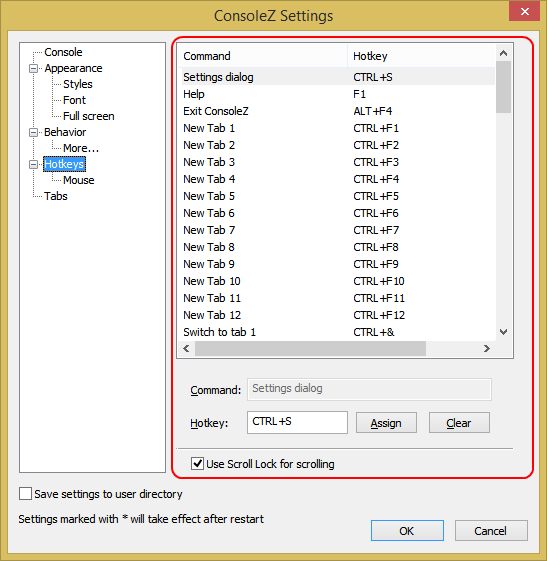

Command/Hotkey
This list shows commands supported by Console.
To change a command hotkey, select a command from the list and click
in the Hotkey box. Then, press your hotkey combination (e.g.
CTRL+4) and click Assign button. The command list will be
updated.
To clear a hotkey command, click Clear button and then click
Assign button.
Use Scroll Lock for scrolling
If checked, you can scroll Console window using the arrow and Page Up/Down keys when Scroll Lock is on.